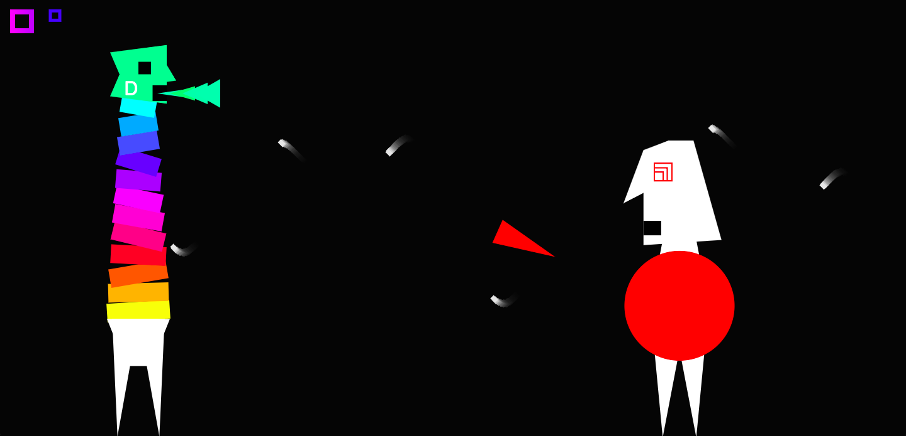

An interactive spectrogram that can instantly
detect the note and chord(!) you are playing.
Get a glimpse at the physics of sound while jamming or practicing.

Featured: Soundman
Spit fire with your Voice
.
Your neck extends with pitch. If you can hold your pitch, Soundman spits fire to catch flies.
Finally you face-off the Goblin - match his exact pitch to win.
Featured: Sine Piano
Play the Piano on your Keyboard
.
Face the music. Works well with the spectrogram from above. Sing a song, remember the notes, play it on the piano. +Detects your chords.
Edit: In some browsers the keys might get stuck...I'll fix it at some point
Some Fun with Machine Learning
Deep pose estimation from 2D phone video
.
Code somewhere on my Github
Atom Flight
Game-based Learning. Explore Atombonding in 3D
.
Code somewhere on my Github -- as well as an Oculus Rift VR version. Proof of Concept – still in development mode.